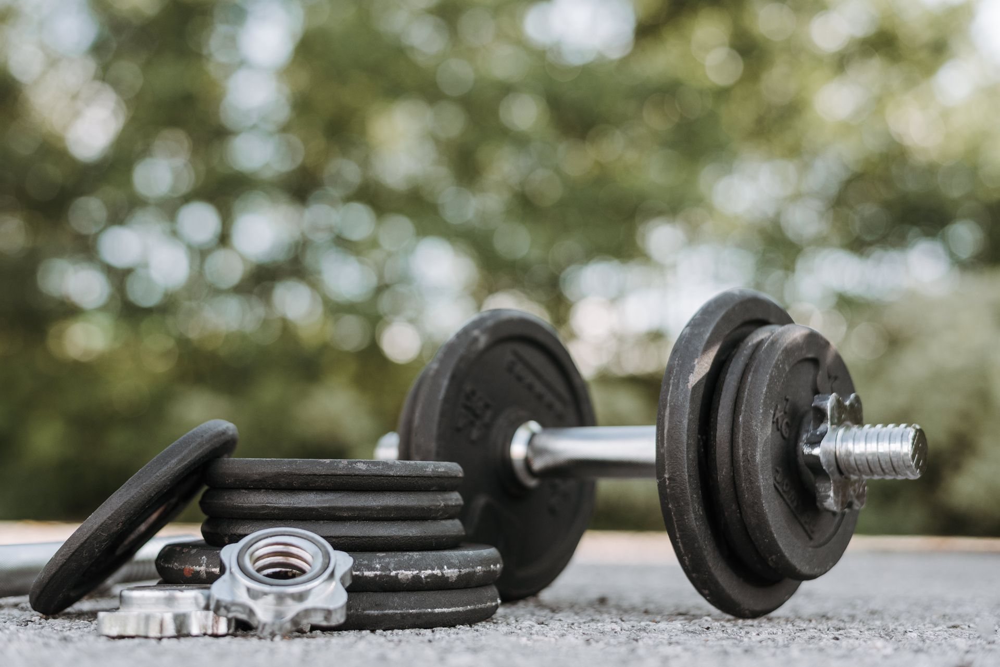

Haltères ajustables : le bon choix pour débuter la musculation à la maison

C'est souvent le troisième achat après le tapis et les élastiques : les haltères. Mais c'est aussi l'achat le plus facile à rater, entre le mauvais poids, le mauvais format, ou un budget qui explose pour rien. Voici comment s'y retrouver.
Fixes ou ajustables : le vrai dilemme
Deux options s'offrent à toi :
- Haltères fixes — un poids par paire, pas de réglage. Simple, robuste, mais il faut plusieurs paires pour progresser (donc plus de budget et d'espace au fil du temps)
- Haltères ajustables — un système à disques ou à molette qui permet de changer le poids sur une seule paire. Plus cher à l'achat initial, mais bien plus économique et compact sur la durée
Pour un usage à la maison avec de l'espace limité, les haltères ajustables sont presque toujours le meilleur choix — sauf si ton budget de départ est très serré, auquel cas une seule paire fixe à faible poids peut suffire pour commencer.
Quel poids choisir pour débuter
C'est la question qui bloque le plus de monde. Quelques repères réalistes :
- Débutant complet, haut du corps (biceps, épaules) — commence autour de 2 à 6 kg par haltère
- Débutant complet, bas du corps / dos (squats, rowing) — les jambes et le dos supportent plus, vise plutôt 6 à 12 kg
- Si tu hésites entre deux poids — prends toujours le plus léger. Il vaut mieux progresser correctement que se blesser en voulant aller trop vite
C'est justement pour cette raison que les modèles ajustables sont si pratiques : tu commences léger, et tu augmentes progressivement sans racheter de matériel.
Les formats de réglage : à disques vs à molette
Système à molette (dial)
Tu tournes une molette sur le côté de l'haltère pour changer le poids instantanément. Rapide, pratique pour enchaîner les exercices, mais généralement plus cher.
Système à disques amovibles
Comme des haltères classiques, tu ajoutes ou retires des disques manuellement. Moins cher, mais plus lent entre deux exercices — ce qui peut casser le rythme d'une séance type circuit training.
Ce qui compte vraiment dans le choix
- La plage de poids totale — vérifie le poids minimum ET maximum du système, pour ne pas être bloqué trop vite en progression
- La prise en main — un manche antidérapant, ni trop fin ni trop épais pour ta main
- La stabilité au sol — certains modèles ont une base plate qui évite qu'ils roulent une fois posés
Notre sélection
Pour débuter sans se ruiner
Une paire ajustable à molette, plage de poids couvrant environ 2 à 20 kg par haltère — largement suffisant pour plusieurs années de progression pour un débutant.
Paire d'haltères ajustables à molette, plage 2-20 kg, base antidérapante stable au sol.
Voir le produit →Le budget à prévoir
Une paire d'haltères ajustables correcte se trouve généralement entre 60 et 120€, selon la plage de poids et le système de réglage. C'est plus cher qu'un tapis ou des élastiques, mais reste largement inférieur au coût cumulé de plusieurs paires fixes sur la durée.
Les erreurs à éviter
- Viser trop lourd dès le départ — la tentation de prendre "large" pour ne jamais être limité mène souvent à une mauvaise exécution des mouvements
- Négliger la stabilité au sol — un haltère qui roule dans un appartement peut abîmer le sol ou blesser quelqu'un
- Choisir un système à disques si tu fais du circuit training — le temps de changement de poids casse le rythme de la séance
- Sous-estimer l'espace de rangement — même compacts, prévois où ils iront après chaque séance
En résumé
Pour débuter la musculation à la maison, une paire d'haltères ajustables, avec une plage de poids large (2-20 kg environ) et une bonne stabilité au sol, reste le choix le plus rentable sur la durée. Commence toujours plus léger que ce que tu penses pouvoir soulever.
Cet article contient des liens affiliés Amazon. Si tu achètes via ces liens, je touche une petite commission, sans surcoût pour toi. Cela m'aide à continuer à créer du contenu gratuit.